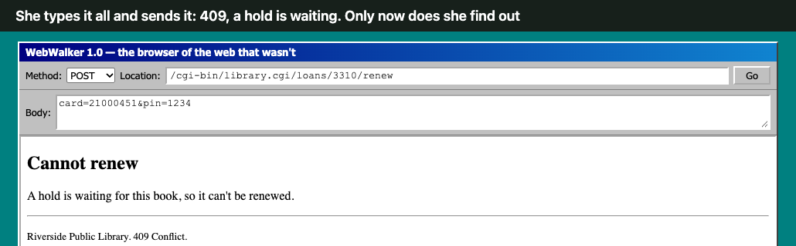
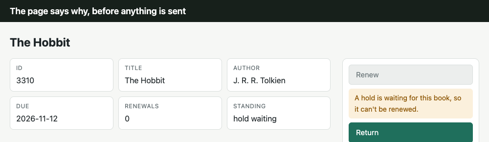
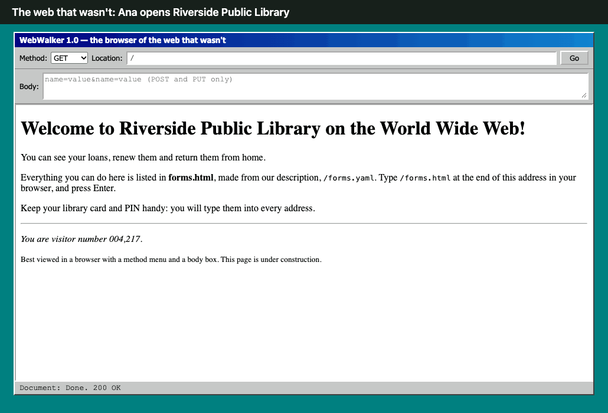
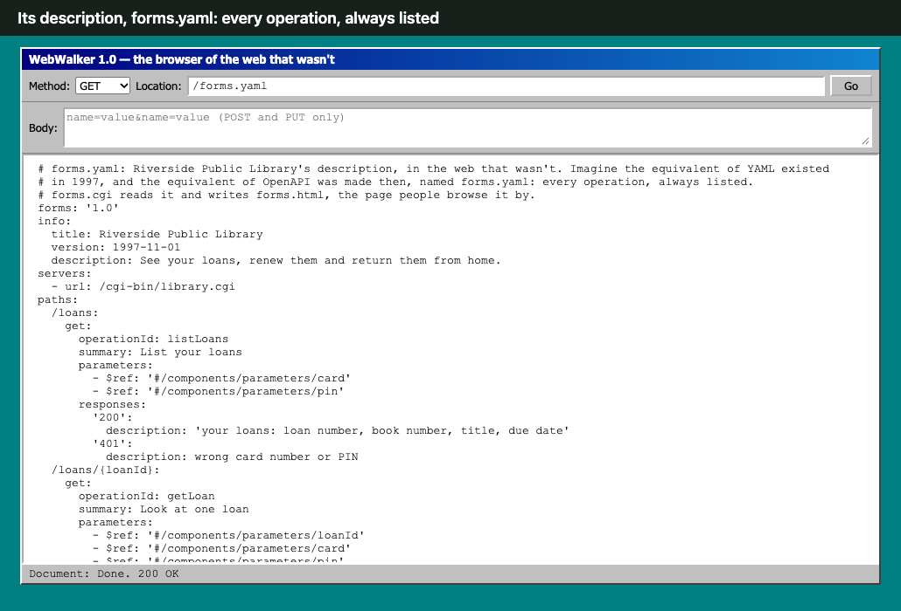
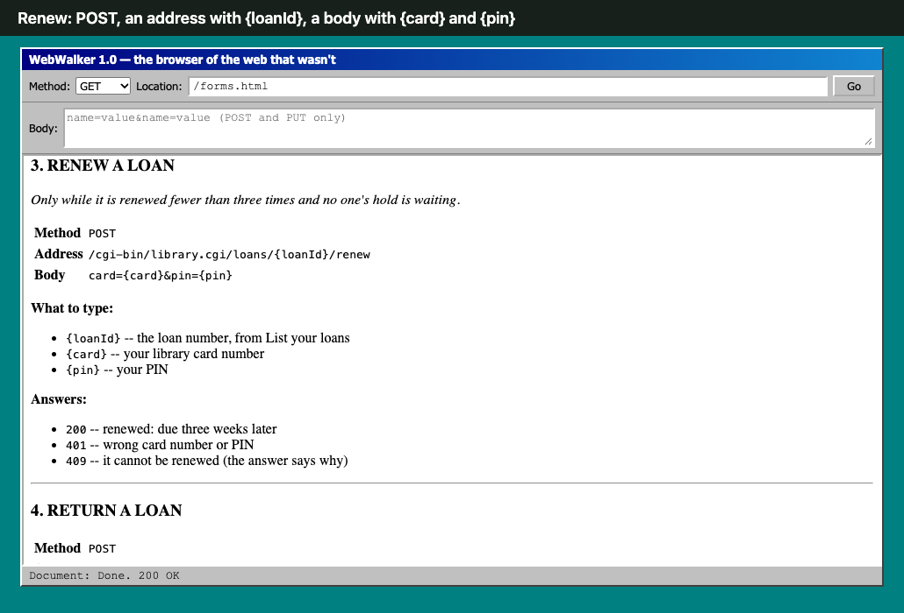
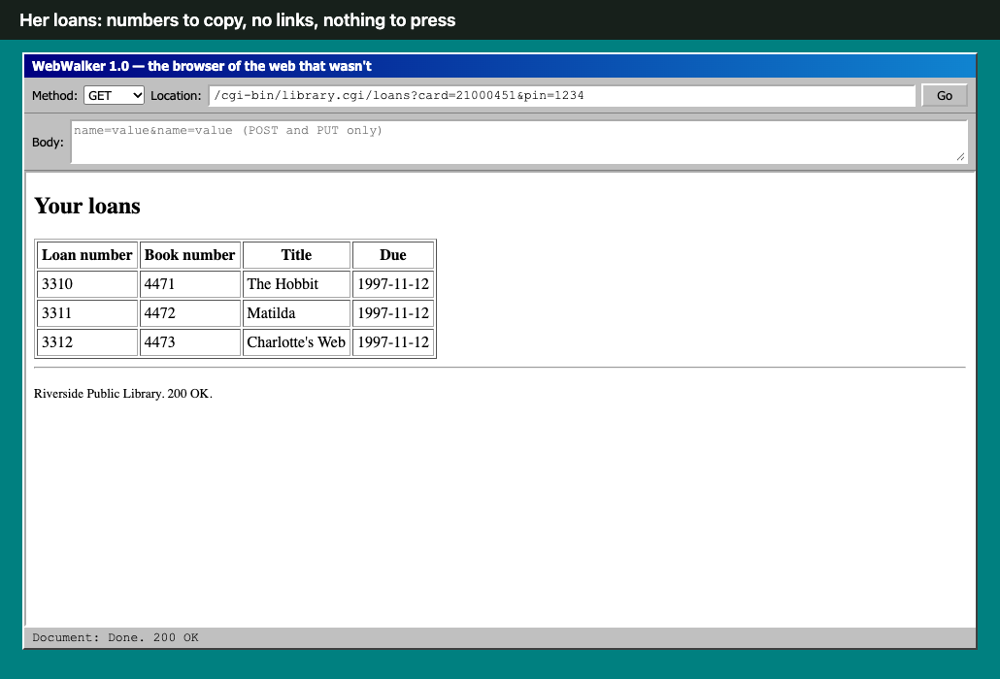
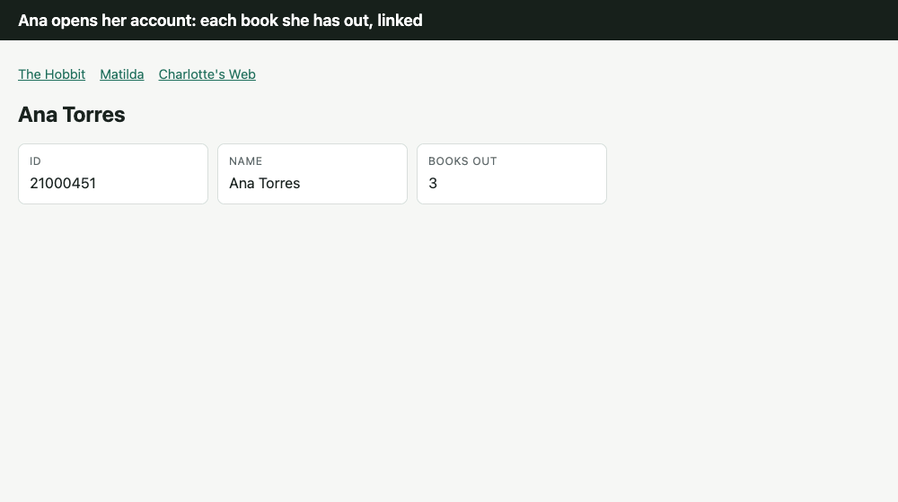
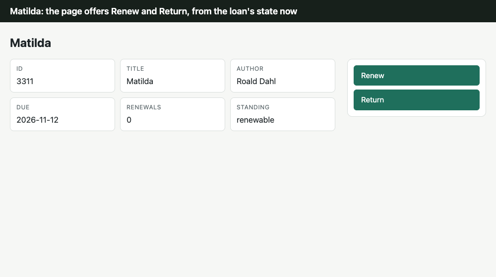

The Web That Wasn't
One library built twice: as if web pages had never carried forms, and as HEART serves it.
Overheard 1997, the library's help line
The web that wasn't. Ana Torres calls Riverside Public Library from her kitchen; Marcus answers.
Ana: I just want to renew The Hobbit. Why am I picking POST from a menu and typing my card number into a box?
Marcus: That's how renewing works online. It's all in forms.html.
Ana: I typed every bit of it, and it said 409. A hold is waiting. Couldn't it have told me before I typed it all?
Marcus: The page doesn't know what you can do. forms.yaml does, for every book alike.
Ana: Why can't the page just show me a Renew button when I can, and say why when I can't?
Marcus: …Huh.
Information and Controls
“When I say hypertext, I mean the simultaneous presentation of information and controls such that the information becomes the affordance through which the user (or automaton) obtains choices and selects actions.”Roy T. Fielding, 2008
Hypermedia as the engine of application state, HATEOAS, is the most followed constraint of all time on the human web, and the least followed on the machine web.
- The human web: every page you have ever loaded follows it. It carries what you can do, from where you are, now.
- The machine web, JSON over HTTP: the data in one answer, the operations in a document beside it, the same for every state.
Fielding's complaint 2008
- He named the rule in 2000: hypermedia as the engine of application state.
- In 2008 he objected to APIs that list their operations up front, and called one of them RPC.
In his words
“I am getting frustrated by the number of people calling any HTTP-based interface a REST API. Today’s example is the SocialSite REST API. That is RPC. It screams RPC. There is so much coupling on display that it should be given an X rating.
What needs to be done to make the REST architectural style clear on the notion that hypertext is a constraint? In other words, if the engine of application state (and hence the API) is not being driven by hypertext, then it cannot be RESTful and cannot be a REST API. Period. Is there some broken manual somewhere that needs to be fixed?”
The post’s opening
“A REST API should be entered with no prior knowledge beyond the initial URI (bookmark) and set of standardized media types that are appropriate for the intended audience (i.e., expected to be understood by any client that might use the API).”
From the same post
Roy T. Fielding, “REST APIs must be hypertext-driven”, 20 October 2008; the rule itself, dissertation, 2000, §5.1.5.
HEART, in brief
HTTP services that answer the way web pages do: each answer carries its state and the controls that state allows. ARTIE is its generic client, as a browser is HTML's.
How it works, and the loop it shares with the human web
- One declaration, every reader: a service declares its acts, what each state offers, and why an act is absent; heart-core serves it as HTML, HAL-FORMS, HAL Schema Forms and an OpenAPI twin.
- The human web's loop is look, think, act. ARTIE's is the same loop by other names: sync, reason, act.
flowchart LR
D["Declaration: acts, offers by state, why absent"] --> C{{"heart-core"}}
C --> H["HTML: a person in a browser"]
C --> F["HAL-FORMS"]
C --> S["HAL Schema Forms: ARTIE"]
C --> O["OpenAPI twin"]
flowchart LR
L(["Look / Sync"]) --> T{{"Think / Reason"}}
T --> A["Act / Act"]
A -- "the next page, or a refusal" --> L
| The human web | ARTIE |
|---|---|
| Look: read the page | Sync: read the state and the controls offered now, with its ETag |
| Think: choose what to press | Reason: choose among the offered controls: the model once, or a kept script with none |
| Act: press it | Act: send the form, with If-Match; the answer is the next state |
Rungs, profile, and APIs you don't own
- Rungs: at L0 the forms and their schemas are inside each answer; at L2 they are linked, one set per state, shared by every resource in it and checked by integrity.
- Profile: each relation, such as
library:renew, is named and described once, in an ALPS document the answers link to. - Refusals: an act not offered is refused 409, a stale one 412, a body that doesn't fit its form 422, each with the reason.
- APIs you don't own: the HEART gateway serves an OpenAPI service as HEART, with your own controls in front.
- More: HEART Architecture, ten diagrams of what is built.
The same moment, two webs


- Same library, same rules: Ana Torres's three books; renew is refused while a hold is waiting or after three renewals.
- The web that wasn't: a document of every address, pages of numbers, a POST typed by hand.
- The web as it is: each page carries the controls its state allows, to a person or an agent.
The web that wasn't
Imagine the equivalent of YAML existed in 1997, and the equivalent of OpenAPI was made then, named forms.yaml. Pages never got forms of their own.

forms.yaml; WebWalker, a browser with a method menu and a body box.How it works
- The site publishes
forms.yaml;forms.cgireads it withYAML::XSand writesforms.html, the page people browse it by. library.cgianswers with data only, and reads each POST's body through CGI.pm'sparam().

forms.yaml
forms.html, from it
forms.yaml, and the POST by hand
/loans/{loanId}/renew:
post:
operationId: renewLoan
summary: Renew a loan
description: Only while it is renewed fewer than three times and no one's hold is waiting.
requestBody:
content:
application/x-www-form-urlencoded:
schema: { $ref: '#/components/schemas/Member' } # card, pin
responses:
'200': { description: 'renewed: due three weeks later' }
'409': { description: it cannot be renewed (the answer says why) }
'401': { description: wrong card number or PIN }curl -X POST -d 'card=…&pin=…' http://localhost:8150/cgi-bin/library.cgi/loans/3310/renew
HTTP/1.1 409 Conflict
Cannot renew. A hold is waiting for this book, so it can't be renewed.Apache 2.4, mod_cgid, CGI.pm, in Docker: exhibits/the-web-that-wasnt/perl.
The web as it is
Overheard today, Ana's kitchen
The web we got. Ana renews from her phone.
Ana: There's a Renew button on Matilda. On The Hobbit it's grey, and it says a hold is waiting.
Marcus: The page only offers what the book can do now. Nobody types POST.

Stills

The same loan as HAL-FORMS
GET /loans/3310 Accept: application/prs.hal-forms+json
"standing": "hold waiting",
"_templates": {
"return": { "method": "POST", "target": "/loans/3310/actions/return" }
}The library: heart/heart-sims, declared once for heart-core; 26 scenarios in library.feature.
The same document, then and now
Overheard today, the library's IT office
Priya builds the library's API; Sam builds the assistant that renews books for members.
Priya: Our loans API is JSON over HTTP, with a full OpenAPI description.
Sam: So my agent reads every operation, sends a renew for The Hobbit, and gets a 409.
Priya: Renew is listed for every loan. It has to be.
Sam: That's forms.yaml. We gave people better than that in 1997.
/loans/{loanId}/renew:
post:
summary: Renew a loan
description: Only while it is renewed
fewer than three times and no one's
hold is waiting.
responses:
'200': renewed
'409': it cannot be renewed/loans/{id}/actions/renew:
post:
description: Offered while the book is out,
renewed fewer than three times, and
no one's hold is waiting.
requestBody: { $ref: Renew }
responses:
'200': The loan after the act
'409': NotOfferedBoth list renew for every loan, always; forms.yaml is the OpenAPI of the web that wasn't, and forms.html its Swagger UI. Whether this loan can be renewed now, each says only after the call.
One loan, every client
| The Hobbit, read from | Renew | Why not |
|---|---|---|
| HTML, a person | greyed | beside the button |
| HAL-FORMS | absent | not in HAL-FORMS |
| HAL Schema Forms, an agent | absent | linked: hr:unavailable |
| OpenAPI | listed, as always | 409 after the call |
forms.yaml, the web that wasn't | listed, as always | 409 after sending |
What an agent reads
GET /loans/3310 Accept: application/hal+json (HAL Schema Forms)
"standing": "hold waiting",
"_links": { "hr:unavailable": { "href": "/unavailable/61bc1cd6003e61f0" } },
"_forms": {
"library:return": { "method": "POST", "_links": { "target": { "href": "/loans/3310/actions/return" } } }
}Why renew is absent, as served
GET /unavailable/61bc1cd6003e61f0
{ "unavailable": [ {
"rel": "/profiles/library#renew",
"title": "Renew",
"reason": "A hold is waiting for this book, so it can't be renewed."
} ] }The same document for every loan in the same state.
Adding the controls back, step by step
Overheard the same office, an hour later
Priya: What would it take to give the API what Ana's page has?
Sam: Links, forms, forms by state, why absent, a version tag. The page already does all of it.
Priya: So the API answers like the page does.
A loan as JSON over HTTP, given back what Ana's page gives her: data, then the controls with it.
- The answer links itself and names its vocabulary.
- The acts arrive as forms: where to send, how, and what to put in.
- The forms follow the state: only what this loan can do now.
- What's absent says why.
- A version tag guards the act: stale is refused.
- One form set per state, shared by every loan in it.
The wire, step by step
Before · JSON over HTTP
GET /loans/3310 Accept: application/json
{ "id": 3310, "title": "The Hobbit", "author": "J. R. R. Tolkien",
"due": "2026-11-12", "renewals": 0, "standing": "hold waiting" }Data only. What can be done is in the OpenAPI document, for every loan alike.
1 · The answer links itself and names its vocabulary
+ "_links": {
+ "self": { "href": "/loans/3310" },
+ "curies": [ { "name": "library", "href": "/profiles/library#{rel}", "templated": true } ]
+ }Each relation, such as library:renew, is defined once, in the library's profile.
2 · The acts arrive as forms (Matilda)
+ "_forms": {
+ "library:renew": {
+ "title": "Renew",
+ "_links": { "target": { "href": "/loans/3311/actions/renew" } },
+ "method": "POST",
+ "contentType": "application/json",
+ "schema": { "type": "object", "properties": {} }
+ },
+ "library:return": { … }
+ }3 · The forms follow the state (The Hobbit)
"standing": "hold waiting",
"_forms": {
- "library:renew": { … },
"library:return": { … }
}The server offers only what this loan can do now. A client acts on what is there, with no rule of its own.
4 · What's absent says why
+ "hr:unavailable": { "href": "/unavailable/61bc1cd6003e61f0" }
GET /unavailable/61bc1cd6003e61f0
{ "unavailable": [ { "rel": "/profiles/library#renew", "title": "Renew",
"reason": "A hold is waiting for this book, so it can't be renewed." } ] }A person sees it beside the greyed button; an agent reads it as data.
5 · A version tag guards the act
ETag: "seq-1.hsf.L0.d96396fb7e046607"
POST /loans/3311/actions/renew If-Match: "seq-0.stale"
412 Precondition Failed The act is stale: the state has changed6 · One form set per state, shared (L2)
- "_forms": { … },
+ "hr:forms": { "href": "/affordance-sets/31a5b6105822d925",
+ "integrity": "sha256-MaW2EFgi2SXHXtDeNNqfRqaPpMhuPfrUB/RV+oPsfQ8=" }Every loan with a hold waiting links the same set: fetched once, checked by its integrity.
What the library declares, step by step
// 1 · its vocabulary
Profile(name = "library", relations = listOf(Relation("renew", AlpsType.UNSAFE, "Renew", …), …))
// 2 · its acts
acts = listOf(Act("renew", "renew", NO_INPUT), Act("return", "return", NO_INPUT))
// 3 · what each state offers
keyOf = { it.standing }
offered = { standing -> when (standing) {
RENEWABLE -> listOf("renew", "return")
RETURNED -> emptyList()
else -> listOf("return")
} }
// 4 · why, when it doesn't
whyAbsent = { standing, _ -> WHY.getValue(standing) } // ON_HOLD: "A hold is waiting for this book, …"
// 5 · the version every act is checked against
versionOf = { it.version }
// 6 · nothing to declare: the client asks for L2 with Prefer: forms=linkheart-core writes the wire from it: the HTML, both JSON dialects, the profile and the OpenAPI twin. For an API you don't own, the HEART gateway does the same from its OpenAPI description: Take HEART; for a GitHub pull request, step by step: Information and Controls.
An agent: ARTIE with Claude
Overheard the next week
Sam: The agent found the way once, ten model calls. Every run since uses none.
Ana: When the hold on The Hobbit clears, will it renew it?
Sam: If the library offers renew then, yes. It acts on what's offered.
Renew each of Ana's books that can be renewed, and say why for any that can't.
- Look up Ana's account by her library card number {card}
- For each book she has out: renew it if renewing is offered; otherwise say why it can't be renewedIt renewed Matilda, and said of the others:
The Hobbit offers no renew form (standing: hold waiting, so another patron has a hold).
Charlotte's Web can't be renewed (renewed the most allowed, 3 renewals).
The kept script
steps:
- act: library:get-account
fields:
id: ${card}
then:
- whenever:
- when-offered:
- act: library:renew- Kept by
artie generatefrom the run: every book the account links, renewed when it offers renew, with no model.
In full: the script, its pins, the run
inputs:
card:
type: integer
steps:
- act: library:get-account
fields:
id: ${card}
intent: Look up Ana's account by her library card number ${card}
then:
- whenever:
- when-offered:
- act: library:renew
inferred: renew this book (Matilda)
from-intent: "For each book she has out: renew it if renewing is offered; otherwise say why it can't be renewed"
then: []
intent: "For each book she has out: renew it if renewing is offered; otherwise say why it can't be renewed"
otherwise:
- note: none of these acts is offered here# renew.pins.yaml: held to before every act
library:renew:
integrity: sha256-YdL5t/euNBufsWOj4hp2WoKWjWPQlQGvS4SAc3aQi/0=
act: sha256-XFhnjOYiXremG4VaoYZQ8C2H1ezQExQRPFbg/+i78yo=
method: POST- The first run: Claude Sonnet 5.5, ARTIE at L2; 10 calls; 25,192 input tokens (7,332 sent, 16,074 read from cache, 1,786 written to it); 1,684 output.
- Each run after: 11 steps, no model.
- Sources:
exhibits/the-web-that-wasnt/artie: the goal, its trace and run report, the kept script and its pins.